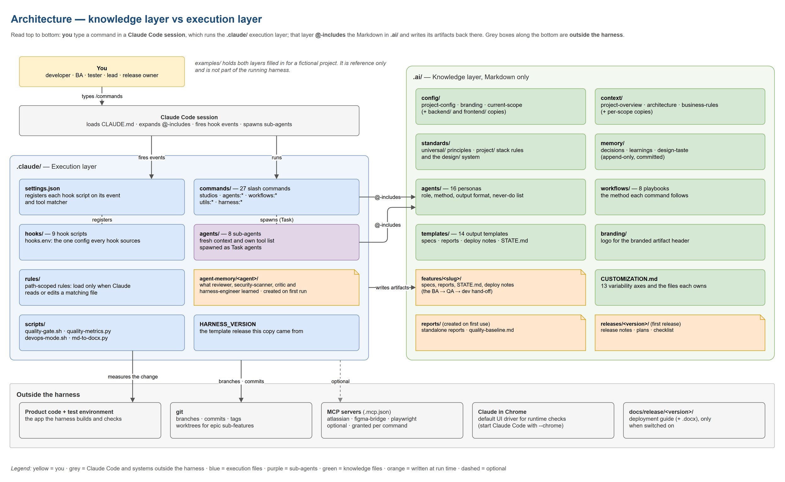
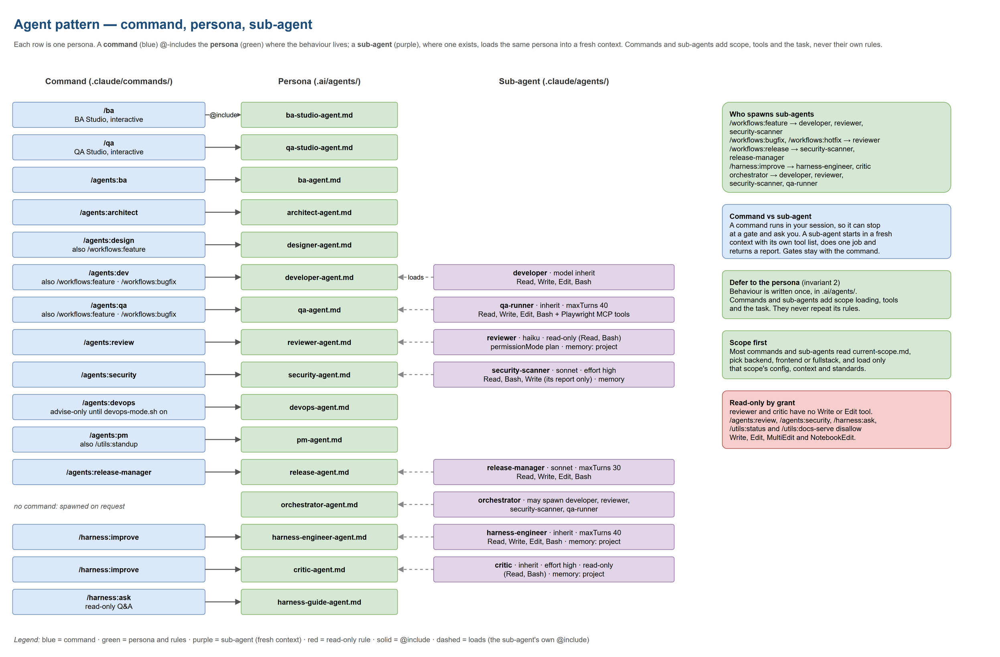
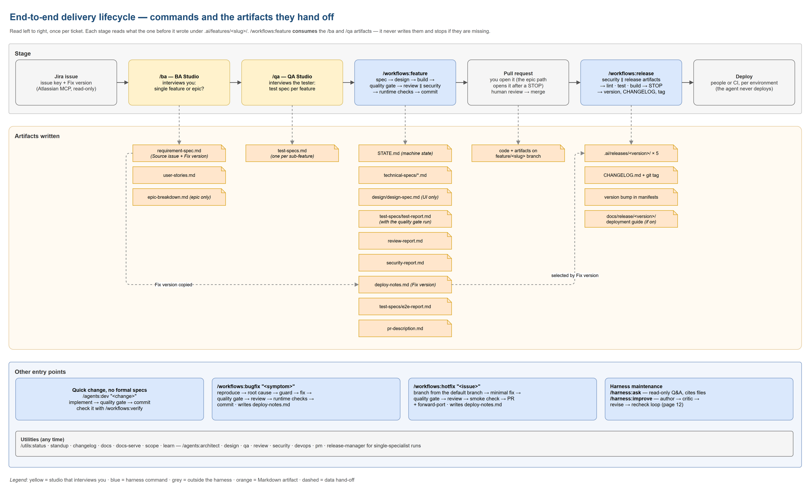
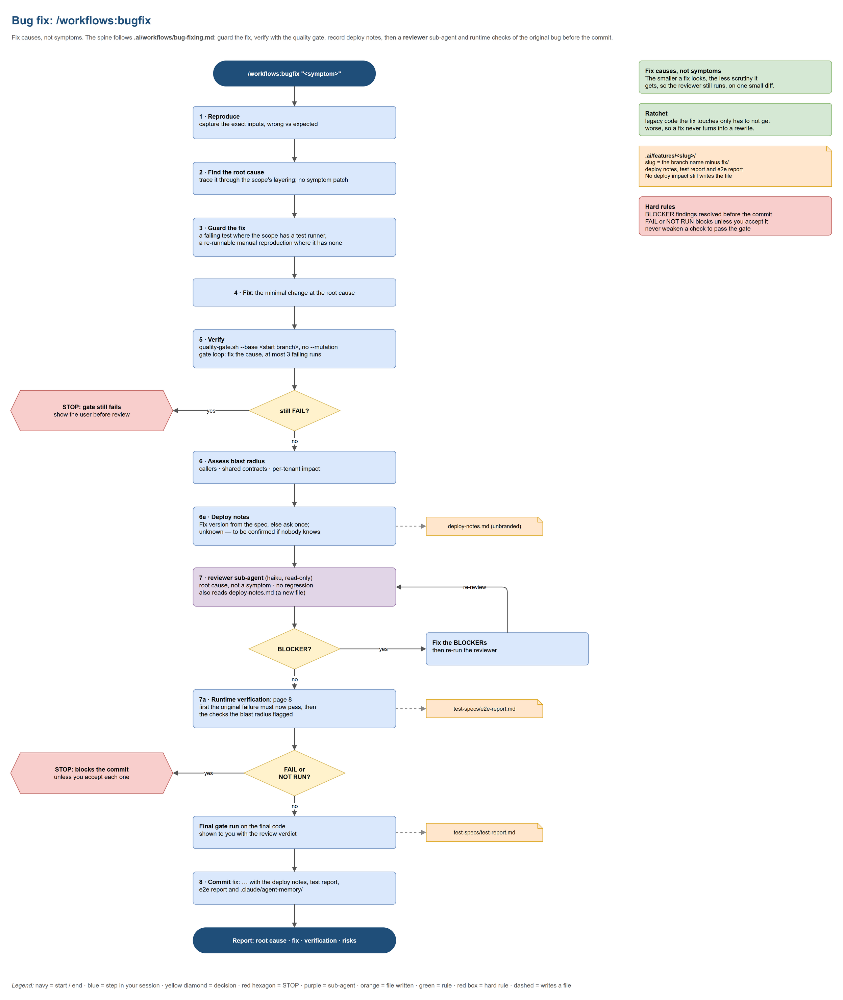
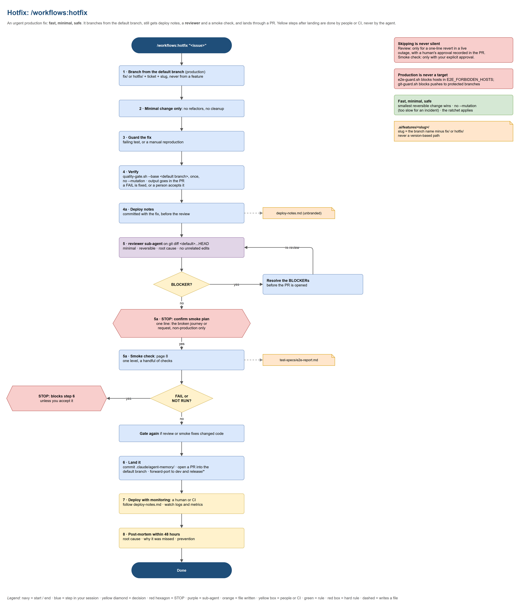
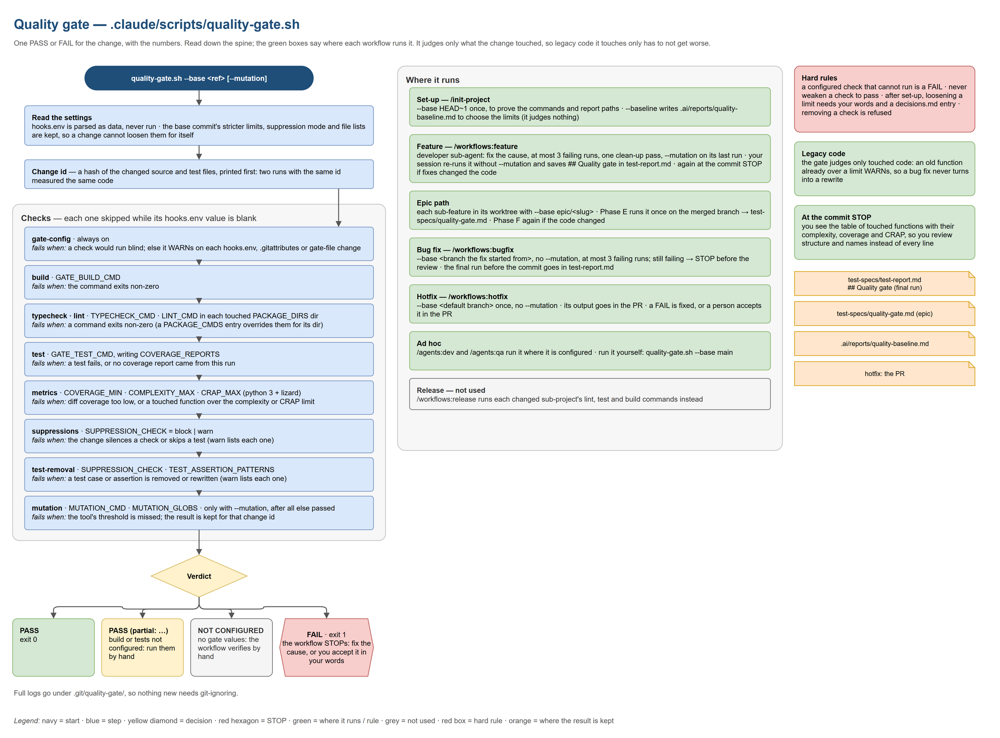
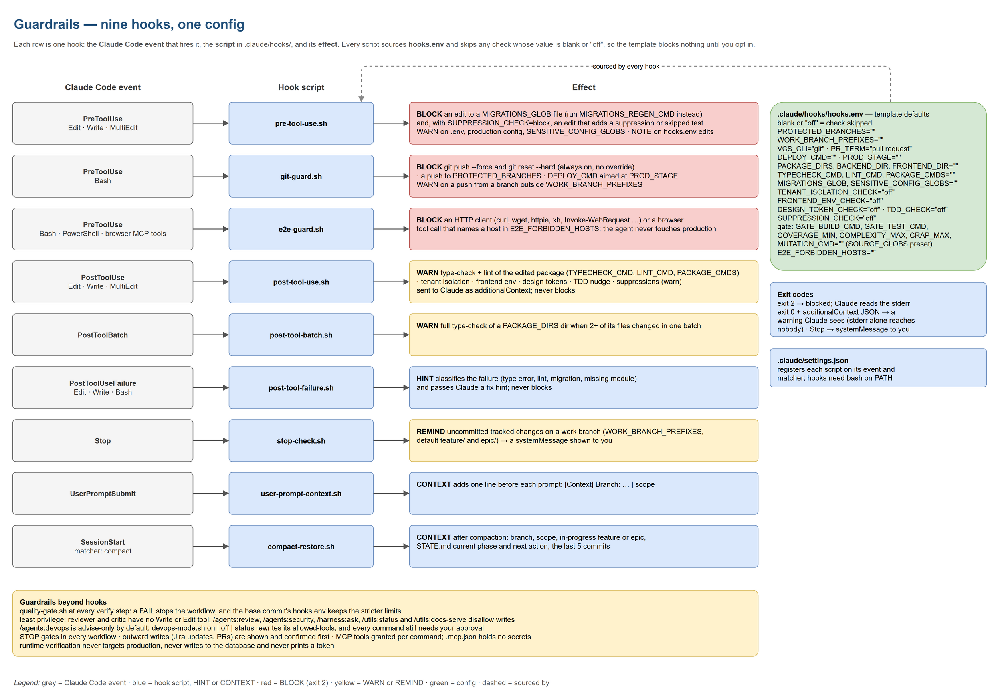
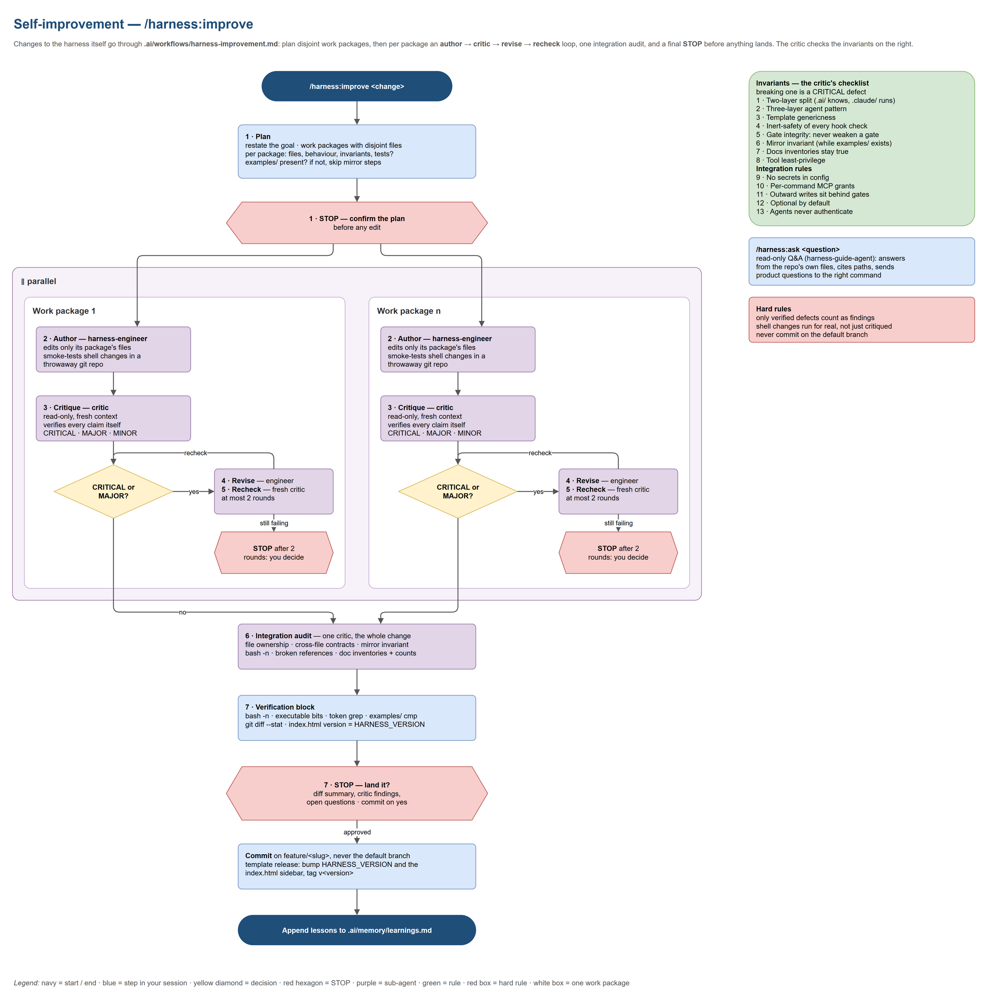

AI Dev Harness — how the agent system works
The AI Dev Harness is a layer on top of Claude Code that takes work from a requirement to a pull request. It has specialist agents (a persona per role, plus sub-agents that run in a fresh context), shared project knowledge in Markdown, workflows with human approval gates, and guardrails: hooks that block or warn on risky actions, and a quality gate that measures each change. This guide explains how the pieces fit together, with a diagram for each part.
- Audience: developers, business analysts, testers, tech leads and release owners who use the harness in a project, and whoever maintains the harness itself.
- Where it lives: the knowledge layer in
.ai/, the execution layer in.claude/, and the full command list inCOMMANDS.md. For one entry per component, see../components.md. - Diagrams: the editable source is one multi-page draw.io file,
diagrams/ai-dev-harness/ai-dev-harness.drawio. The PNGs are exported from it (see Updating the diagrams).
1.Architecture — knowledge layer vs execution layer


You type a slash command in a Claude Code session. The session runs files from .claude/, which pull in the Markdown in .ai/ through @-includes. The same command therefore behaves correctly in every project once .ai/ is filled in by /init-project.
| Layer | Folder | Holds | Executes? |
|---|---|---|---|
| Knowledge | .ai/ | Personas, workflow playbooks, standards, templates, project config and context, memory, and the artifacts each feature produces | No. Markdown only; it is read, never run |
| Execution | .claude/ | Slash commands, sub-agents, hooks and hooks.env, settings.json, helper scripts, path-scoped rules, HARNESS_VERSION | Yes. Claude Code runs it |
| Root files | CLAUDE.md, AGENTS.md, COMMANDS.md, .mcp.json | Per-session guidance, the method for non-Claude agents, the command list, the MCP servers | CLAUDE.md is loaded into every session |
Knowledge layer (.ai/)
| Path | Purpose |
|---|---|
.ai/agents/ | 16 personas: each role's responsibilities, method, output format and never-do list |
.ai/workflows/ | 8 playbooks: the method each command follows |
.ai/standards/universal/ | Portable principles: coding, API design, security baseline, testing, accessibility, UI/UX, frontend design, git workflow |
.ai/standards/project/ | Your stack's rules (tech-specific.md) and the design system under frontend/design/; the per-stack folders are reference only |
.ai/templates/ | 14 output templates, from technical-spec.md to feature-state.md |
.ai/config/ | project-config.md (stack, commands, test environments, release deliverables), branding.md, current-scope.md, plus per-scope copies |
.ai/context/ | project-overview.md, architecture.md, business-rules.md, plus per-scope copies |
.ai/memory/ | decisions.md, learnings.md, design-taste.md: append-only, committed |
.ai/features/ | One folder per feature slug with its specs, reports, STATE.md and deploy-notes.md |
.ai/CUSTOMIZATION.md | The 13 variability axes and the files and tokens each one owns |
.ai/reports/, .ai/releases/<version>/ | Created on first use: standalone reports, quality-baseline.md, and each release's internal artifacts |
Execution layer (.claude/)
| Path | Purpose |
|---|---|
.claude/commands/ | 27 slash commands: the studios (/init-project, /ba, /qa) and the agents:, workflows:, utils: and harness: families |
.claude/agents/ | 8 sub-agents, each with its own context window, tool list and model |
.claude/hooks/ | 9 hook scripts and hooks.env, the one config they all read |
.claude/settings.json | Registers each hook on its event and tool matcher |
.claude/scripts/ | quality-gate.sh and its engine quality-metrics.py, devops-mode.sh, md-to-docx.py |
.claude/rules/ | Path-scoped rules that load only when Claude reads or edits a matching file |
.claude/HARNESS_VERSION | The template release a project was set up from |
.claude/agent-memory/<agent>/ | Created on first run by the four sub-agents with memory: project; committed with the workflows' changes |
The examples/ folder holds both layers filled in for a fictional project. It is a reference for what a configured file looks like and is not part of the running harness.
Optional integrations. .mcp.json ships three MCP servers: atlassian (remote, OAuth, no secret in the file), figma-bridge and playwright (both started with npx). You authenticate once with /mcp. Tools are granted per command: /ba can take a Jira issue key as its input, /agents:pm and /utils:standup (both load pm-agent.md) can enrich status from Jira, and /workflows:release can transition released Jira issues behind a STOP. For UI checks, Claude in Chrome is the default driver (start Claude Code with --chrome), Playwright MCP is the fallback, then the project's e2e command. A read-only database MCP server is optional and added by /init-project. Every step that uses an integration is conditional: with no server connected, the harness falls back to the manual path, and a check that cannot run is reported as NOT RUN.
2.Agent pattern — command, persona, sub-agent


An agent is defined and reached in up to four ways:
- Persona —
.ai/agents/<name>-agent.mdholds the behaviour: responsibilities, method, output format and what never to do. You cannot run a persona on its own. - Command — a file under
.claude/commands/@-includes the persona plus the standards, templates or playbook it needs. It adds scope detection, theallowed-toolsline and the task. You run it as/name <arguments>. - Sub-agent —
.claude/agents/<name>.mdloads the same persona with an@-include in its body, and sets its owntools,model,effort,maxTurnsandmemory. Workflow commands spawn it as a Task agent with a fresh context. You never type a sub-agent's name. - Orchestrator — the
orchestratorsub-agent may delegate todeveloper,reviewer,security-scannerandqa-runner(itstoolsline). No command spawns it.
Defer to the persona. Behaviour is written once. /agents:review and the reviewer sub-agent both load reviewer-agent.md, which owns the review method and the BLOCKER / WARNING / SUGGESTION / PRAISE vocabulary. The sub-agent file adds only scope loading, its memory folder and the output it returns. To change how reviews work, you edit the persona once and both paths follow. This is invariant 2 in harness-improvement.md.
Some commands load a playbook instead of a persona: /workflows:hotfix loads hotfix-process.md, /workflows:release loads release-process.md, /workflows:verify loads runtime-verification.md, and the utilities mostly load nothing.
Notable sub-agent settings
reviewer—model: haiku,permissionMode: plan, toolsRead, Bashonly. It saves its report through Bash; it has no Write or Edit tool for the project.critic—model: inherit,effort: high, toolsRead, Bash: read-only, used to break authored harness changes.security-scanner—model: sonnet,effort: high, toolsRead, Bash, Write; it writes only the report it is asked for.release-manager—model: sonnet,maxTurns: 30.qa-runner— Playwright MCP browser tools in itstoolsline. It declines runtime verification, which runs in your session.memory: projectonreviewer,security-scanner,criticandharness-engineer: each keeps.claude/agent-memory/<agent>/MEMORY.md, reads it before the work and ends with aMemory:line.- Read-only commands:
/agents:review,/agents:security,/harness:ask,/utils:statusand/utils:docs-servesetdisallowed-tools: Write, Edit, MultiEdit, NotebookEdit.
3.End-to-end delivery lifecycle


The standard path for a ticket:
Jira issue (key + Fix version) → read through the Atlassian MCP server when it is connected
/ba <slug> → requirement-spec.md (with Fix version), user-stories.md, epic-breakdown.md for an epic
/qa <slug> → test-specs.md (one per sub-feature for an epic)
/workflows:feature <slug> → STATE.md, technical-specs/, design/design-spec.md, test-specs/test-report.md
(with ## Quality gate), test-specs/quality-gate.md for an epic, review-report.md,
security-report.md, deploy-notes.md, test-specs/e2e-report.md, pr-description.md
… pull request: you open it from pr-description.md (the epic path opens it after a STOP);
a person reviews and merges …
/workflows:release <version> → .ai/releases/<version>/ (release notes, migration plan, rollback plan,
deployment checklist, security report), CHANGELOG.md, git tag,
docs/release/<version>/ deployment guide if switched on
… deploy: people or CI; the agent never deploys and is blocked from production hosts …Key points:
- People decide at every stage.
/baand/qaare interviews./workflows:featurestops at the spec, the design (UI only) and the commit;/workflows:releasestops on a CRITICAL finding, before it finalizes, and before any Jira update. Reviewing and merging the pull request, and the deploy, are done by people. - The quality gate runs inside the change workflows (section 9): feature, epic, bug fix and hotfix. Its final run is kept in
test-specs/test-report.md(test-specs/quality-gate.mdfor an epic, the PR for a hotfix). The release does not run it; it runs each changed sub-project's lint, test and build commands. - Studios produce, workflows consume.
/workflows:featurenever writes stories, epic breakdowns or test specs. If they are missing it stops and tells you to run/baand/qa. - One folder per feature. Everything lands under
.ai/features/<slug>/, which is the hand-off surface between BA, QA and development. - Fix version flows through.
/barecords it in the spec's## Source issueblock (from Jira, from you, orunknown — to be confirmed). Each change copies it intodeploy-notes.md. - Deploy notes feed the release. Feature, bugfix and hotfix each write
deploy-notes.md, even when there is no deploy impact./workflows:releaseselects them by fix version. - Branding. Every document except
STATE.mdanddeploy-notes.mdopens with the header from.ai/templates/artifact-header.md.
Other ways in: /agents:dev "<change>" for a quick change without studio specs (it runs the quality gate where it is configured; check it with /workflows:verify), any single specialist under /agents:*, /workflows:bugfix (it commits; you open the PR) and /workflows:hotfix (it opens the PR into the default branch) for fixes, and /harness:ask or /harness:improve for the harness itself. The /utils:* commands work at any time.
4.Feature workflow — /workflows:feature

The command is .claude/commands/workflows/feature.md; the playbook is .ai/workflows/feature-development.md.
Things to know when you run it:
- It decides single vs epic from what
/bawrote.epic-breakdown.mdpresent means the epic path (section 5). It does not re-analyse your request. - STOP gates: missing BA/QA inputs; step 2, approve the technical spec (and answer one question: per-task atomic commits, default off); step 2a, approve the design Artifact, with the Architect's approval as well (UI features only); step 4, a quality gate that still fails; step 6, confirm the commit.
- Who does what. The developer sub-agent implements from the
## Taskschecklist inSTATE.mdand writes the tests and the test report. The reviewer and security-scanner sub-agents run in parallel on the same diff. Every gate stays in your session. - How the quality gate runs (section 9). The developer agent runs
.claude/scripts/quality-gate.sh --base <base-branch>in a loop: fix the cause, at most 3 failing runs,--mutationon its last run only. Your session then re-runs it without--mutation, and that run replaces## Quality gateintest-specs/test-report.md. At step 6 it runs again if review or runtime fixes changed the code.NOT CONFIGUREDfalls back to manual verification;PASS (partial: …)means the named build or tests were run by hand. - Step 5a writes
deploy-notes.mdbefore the commit STOP, so the file rides the same commit. - Step 5b runs runtime verification in your session (section 8) and writes
test-specs/e2e-report.md. - What blocks the commit. Unresolved CRITICAL security findings, and any runtime FAIL or NOT RUN that you have not accepted in your own words (recorded in
STATE.md). - Resume.
STATE.mdis updated after every step, at every STOP and before every Task spawn. On a re-run, the workflow checks that each phase marked done has its file on disk, re-runs any that do not, and continues from## Next action.
5.Epic path — Phases A–F

| Phase | What happens |
|---|---|
| A — Validate inputs | Reads epic-breakdown.md; checks every sub-feature has requirement-spec.md, user-stories.md and test-specs.md (missing → STOP); STOP to confirm the sub-features and dependency groups |
| B — UI/UX design gate | /agents:design and its approval loop for each UI sub-feature, before any autonomous work |
| C — Epic branch | Creates epic/<slug>, commits the planning artifacts under .ai/features/<slug>/, pushes |
| D — Parallel implementation | Per dependency group: one git worktree per sub-feature under .worktrees/, one developer sub-agent each, all at once; the next group waits for this one |
| E — Sequential merge | Merges each sub-feature branch into epic/<slug> in dependency order, re-verifies, removes the worktree; then runs the quality gate once on the integrated branch → test-specs/quality-gate.md |
| F — Final review and PR | Reviewer and security scanner in parallel on the full epic diff; runtime verification once; final gate if code changed; pr-description.md; STOP to confirm the PR |
- Worktrees only see committed files, so Phase C must commit the planning artifacts first. Add
.worktrees/to the project's.gitignore. - Each developer agent writes its technical spec, test report and deploy notes inside its worktree and commits them on
feature/<slug>/<sub>, withquality-gate.sh --base epic/<slug>. - The epic
STATE.mdlives in the main working tree. Only the parent session edits it; it tracks each sub-feature as pending, in progress, implemented or merged. - After a crash, the workflow reuses a worktree only if it is valid and clean. It never deletes or force-recreates a sub-feature branch, and never force-removes a dirty worktree; in doubt it stops and asks you.
- A gate still failing in Phase E stops for your direction or explicit acceptance.
6.Bug fix — /workflows:bugfix


Things to know when you run it:
- Guard the fix first: a failing test where the scope has a test runner, a re-runnable manual reproduction where it has none.
- Quality gate:
quality-gate.sh --base <branch the fix started from>, no--mutation, at most 3 failing runs. Still failing → STOP before the review. Its ratchet means legacy code you touch only has to not get worse. - Deploy notes (step 6a) go to
.ai/features/<slug>/deploy-notes.md, where the slug is the branch name minusfix/. The fix version comes from the spec; if there is none the workflow asks you once, and writesunknown — to be confirmedif nobody knows. - Review gate (step 7): a
reviewersub-agent checks the fix addresses the root cause and also reads the new deploy notes. BLOCKER findings must be fixed and re-reviewed before the commit. - Runtime verification (step 7a) first proves the original failure now behaves, then checks what the blast-radius step flagged. A FAIL or NOT RUN blocks the commit unless you accept it.
- Before the commit the gate runs once more on the final code, and that run is saved under
## Quality gateintest-specs/test-report.mdand shown with the review verdict. The commit uses afix:prefix and includes the deploy notes, test report, e2e report and any.claude/agent-memory/changes.
7.Hotfix — /workflows:hotfix


Things to know when you run it:
- Branch from the default branch (production), never from a feature branch, as
fix/orhotfix/plus ticket and slug. - One gate run:
quality-gate.sh --base <default branch>once, no--mutation. Its output goes in the PR. A FAIL is fixed or explicitly accepted by a person in the PR; if review or smoke fixes change the code, the gate runs again. - Deploy notes (step 4a) are committed with the fix before the review, so the reviewer sees them.
- Review gate (step 5): a
reviewersub-agent ongit diff <default>...HEAD. BLOCKERs must be resolved before the PR. It may be skipped only for a one-line revert during a live outage, with a person's approval recorded in the PR, never silently. - Smoke check (step 5a): one broken journey or request against a non-production environment. The agent proposes it in one line and waits for your yes. Skipping it also needs your explicit approval, recorded in the PR.
- Land it (step 6): a PR into the default branch, then forward-port to the development and
release/*branches. The deploy and the post-mortem (within 48 hours) are done by people or CI; the agent is blocked from production hosts.
8.Runtime verification — /workflows:verify

The playbook is .ai/workflows/runtime-verification.md. /workflows:feature (step 5b, or epic Phase F step 0a), /workflows:bugfix (step 7a) and /workflows:hotfix (step 5a, smoke only) call it; /workflows:verify runs it on demand for ad-hoc work or a /agents:dev change, and never commits.
Things to know when you run it:
- It runs in your session, not a sub-agent, so you confirm the plan, do any login, approve the browser's site prompts and decide on failures.
- Test environments in
.ai/config/project-config.mdmust be filled in. If not, it stops and says which values are missing; it never guesses a URL. - Plan, then one STOP. It proposes API, UI and DB checks from the diff and the feature's specs, shows what it will not check, and asks you once to run or edit the plan.
- Drivers: UI checks use Claude in Chrome, then Playwright MCP, then the project's e2e command, else NOT RUN. Claude in Chrome opens a new tab and first checks a test account is signed in. DB checks are
SELECTonly through a read-only database MCP server, or NOT RUN. - Credentials: a token command substituted inline in each request, or an environment variable exported before you start Claude Code. It never prints, stores or commits a token, and never types a password.
- Report:
test-specs/e2e-report.mdfor a feature, or.ai/reports/e2e-<date>-<slug>.md. Every planned check is PASS, FAIL or NOT RUN, on observed evidence only. Screenshots stay local and git-ignored. - Gate: a FAIL or a planned check that did not run blocks the commit unless you accept it, in your words, recorded in
STATE.mdand the PR.
9.Quality gate — quality-gate.sh


The script is .claude/scripts/quality-gate.sh; its coverage, complexity and CRAP engine is quality-metrics.py. It gives one PASS or FAIL for the change, with the numbers, and judges only what the change touched. Legacy code a change touches only has to not get worse, so a bug fix never turns into a rewrite.
.claude/scripts/quality-gate.sh --base <ref> [--mutation] # measure the change since <ref>
.claude/scripts/quality-gate.sh --baseline # snapshot the whole codebase| Check | Set in hooks.env | Fails when |
|---|---|---|
| gate-config | Always on | A check would run blind. Otherwise it warns on each hooks.env, .gitattributes and gate-file change, since loosening the gate needs your words |
| build | GATE_BUILD_CMD | The command exits non-zero |
| typecheck, lint | TYPECHECK_CMD, LINT_CMD, in each touched PACKAGE_DIRS dir (a PACKAGE_CMDS entry overrides them there) | A command exits non-zero |
| test | GATE_TEST_CMD, which should write COVERAGE_REPORTS | A test fails, or no coverage report came from this run |
| metrics | COVERAGE_MIN, COMPLEXITY_MAX, CRAP_MAX (needs python 3 and pip install lizard) | Too few changed lines ran under test, or a new or more complex function is over the complexity or CRAP limit |
| suppressions | SUPPRESSION_CHECK (block or warn) | In block mode, the change silences a check or skips a test; warn lists each one for the reviewer |
| test-removal | SUPPRESSION_CHECK, TEST_ASSERTION_PATTERNS | In block mode, the change removes or rewrites a test case or assertion |
| mutation | MUTATION_CMD, MUTATION_GLOBS; only with --mutation, once everything else passed | The tool's threshold is missed; the result is kept for that exact change |
Each check is skipped while its hooks.env value is blank.
Things to know:
- Verdicts.
PASSandPASS (partial: …)exit 0; partial names a build or test step that is not configured, so you run it by hand.NOT CONFIGUREDmeans no gate values are set, and the workflow falls back to its own verification.FAILexits 1 and the workflow stops. A configured check that cannot run counts as a FAIL. - A change cannot loosen it for itself.
hooks.envis parsed as data, never run, and the base commit's stricter limits, suppression mode and file lists are kept. After set-up, loosening a limit needs your explicit approval and a line in.ai/memory/decisions.md; removing a check is refused. - Change id. The first output line is a hash of the changed source and test files, so you can tell which code a recorded result measured. Full logs go under
.git/quality-gate/. --baselinemeasures the whole codebase and writes.ai/reports/quality-baseline.md. It judges nothing;/init-projectuses it to choose the limits, and re-running it shows the trend.- At the commit STOP you see the gate's table of touched functions with their complexity, coverage and CRAP, so you can review structure and names instead of reading every line.
Where it runs:
| Where | How |
|---|---|
/init-project | --base HEAD~1 once, to prove the commands and report paths, then --baseline |
/workflows:feature | The developer sub-agent loops: fix the cause, at most 3 failing runs, one clean-up pass, --mutation on its last run. Your session re-runs it without --mutation and saves ## Quality gate in test-specs/test-report.md; it runs again at the commit STOP if fixes changed the code |
| Epic path | Each sub-feature in its worktree with --base epic/<slug>; Phase E once on the merged branch → test-specs/quality-gate.md; Phase F again if the code changed |
/workflows:bugfix | --base <branch the fix started from>, no --mutation, at most 3 failing runs; still failing → STOP before the review. The final run before the commit goes in test-specs/test-report.md |
/workflows:hotfix | --base <default branch> once, no --mutation; its output goes in the PR. A FAIL is fixed, or a person accepts it in the PR |
| Ad hoc | /agents:dev and /agents:qa run it where it is configured; you can run quality-gate.sh --base main yourself |
/workflows:release | Not used: each changed sub-project's lint, test and build commands run instead |
10.Release — /workflows:release

Things to know when you run it:
- Step 1 runs two sub-agents in parallel:
security-scannerongit diff <last tag>..HEADwith a dependency audit, andrelease-manager, which writes release notes, migration plan, rollback plan and deployment checklist to.ai/releases/<version>/from the deploy notes whose fix version matches. - CRITICAL findings stop the release. HIGH findings are shown and you decide whether to go on.
- Step 2 runs each changed sub-project's lint, test and build commands from its project-config.
quality-gate.shis not part of the release path. - Step 3 STOP: you see the security verdict, artifact paths, the deploy notes in scope (and any with no deploy impact or an unknown fix version), the gate results, and what step 4 will do with the deployment guide.
- Step 4 bumps each manifest (fix → patch, feat → minor, breaking → major) and updates
CHANGELOG.md. If the deployment guide is switched on inproject-config.md→ Release deliverables, it creates or mergesdocs/release/<version>/deployment-guide-<version>.md, regenerates the Word copy with.claude/scripts/md-to-docx.pyif that is on, and refreshesdocs/release/README.md. An existing guide is merged, never overwritten. - Then one commit (
chore(release): bump version to <version>) andgit tag <version>. If the Atlassian MCP server is connected, a last STOP shows the issues, transition and comment before anything is sent. The workflow never pushes or deploys.
11.Hooks and guardrails


Hooks are registered in .claude/settings.json and need bash on PATH. Every script sources .claude/hooks/hooks.env and skips any check whose value is blank or "off", so an unconfigured template blocks nothing. Exit code 2 blocks the tool call and Claude reads the stderr; exit 0 allows it, and a warning reaches Claude only as additionalContext JSON on stdout. The Stop reminder goes to you as a systemMessage.
| Hook | Behaviour |
|---|---|
pre-tool-use.sh (PreToolUse: Edit, Write, MultiEdit) | Blocks edits to MIGRATIONS_GLOB files, and with SUPPRESSION_CHECK=block an edit that adds a suppression or skipped test. Warns on .env files, production config and SENSITIVE_CONFIG_GLOBS; notes edits to hooks.env |
git-guard.sh (PreToolUse: Bash) | Blocks git push --force and git reset --hard with no override, pushes to PROTECTED_BRANCHES, and DEPLOY_CMD aimed at PROD_STAGE. Warns on a push from a branch outside WORK_BRANCH_PREFIXES |
e2e-guard.sh (PreToolUse: Bash, PowerShell, Claude in Chrome, Playwright) | Blocks HTTP clients and browser tool calls that name a host in E2E_FORBIDDEN_HOSTS |
post-tool-use.sh (PostToolUse: Edit, Write, MultiEdit) | Warns: type-check and lint of the edited package, tenant isolation, frontend env, design tokens, TDD nudge, suppressions in warn mode |
post-tool-batch.sh (PostToolBatch) | Warns: full type-check of a package dir when two or more of its files changed in one batch |
post-tool-failure.sh (PostToolUseFailure: Edit, Write, Bash) | Hint: classifies a failed call (type, lint, migration, missing module) and passes a fix hint to Claude as context |
stop-check.sh (Stop) | Reminds you of uncommitted tracked changes on a work branch |
user-prompt-context.sh (UserPromptSubmit) | Adds the current branch and scope before each prompt |
compact-restore.sh (SessionStart, compact) | Re-injects branch, scope, the in-progress feature or epic, STATE.md phase and next action, and the last 5 commits |
To change a guardrail, edit .claude/hooks/hooks.env, not the scripts.
Safeguards beyond hooks:
quality-gate.shmeasures every change at the workflows' verify steps; a FAIL stops the workflow. It keeps the base commit's stricter limits, so a change cannot loosen them for itself.- Least privilege in frontmatter:
reviewerandcritichave no Write or Edit tool, and five commands disallow writes. /agents:devopsis advise-only by default..claude/scripts/devops-mode.sh on | off | statusrewrites itsallowed-toolsline; in execute mode each command still needs your approval.- STOP gates in every workflow, and every outward write (Jira update, PR) is shown and confirmed first. MCP tools are granted per command, and
.mcp.jsonholds no secrets.
12.Self-improvement — /harness:improve


The loop, from .ai/workflows/harness-improvement.md:
- Plan — restate the goal and split it into work packages with disjoint file sets. STOP: you confirm the plan before any edit.
- Author — one
harness-engineersub-agent per package, in parallel. Shell changes are run for real (bash -nand smoke runs in a throwaway git repo). - Critique — one read-only
criticper package verifies every claim itself and grades findings CRITICAL, MAJOR or MINOR. - Revise — a
harness-engineerfixes every CRITICAL and MAJOR finding, or rebuts it with evidence. - Recheck — a fresh
criticconfirms the fixes. At most two rounds, then STOP and you decide. - Integrate — one critic audits the whole change: file ownership, cross-file contracts, the mirror invariant,
bash -n, broken references, and the doc inventories with their counts. - Verify and land — run the verification block, show the diff summary, then STOP. It commits only on your approval, on a
feature/branch. A template release also bumpsHARNESS_VERSIONand thedocs/index.htmlsidebar version and is taggedv<version>. Lessons go to.ai/memory/learnings.md.
The playbook has 13 numbered rules: 8 invariants (two-layer split, three-layer agent pattern, template genericness, inert-safety, gate integrity, mirror invariant, docs inventories, tool least privilege) and 5 integration rules (no secrets in config, per-command grants, outward writes behind gates, optional by default, agents never authenticate). Breaking any of them is a CRITICAL defect.
For questions rather than changes, /harness:ask <question> is read-only. It uses harness-guide-agent.md, answers from the repo's own files, cites the paths, and redirects product code questions to the right command.
13.Cross-cutting concepts
- Scope. Most commands and sub-agents first read
.ai/config/current-scope.md. A# Forced scope:line wins; otherwise they infer backend, frontend or fullstack from the request and load only that scope's config, context and standards. Force a scope with/utils:scope. - Branding.
.ai/config/branding.mdand.ai/templates/artifact-header.mdput your header on every generated document, exceptSTATE.mdanddeploy-notes.md. - Workflow state.
STATE.md, from.ai/templates/feature-state.md, is what makes the feature and epic workflows resumable;compact-restore.shprints its next action after compaction. - Memory.
.ai/memory/decisions.md,learnings.md(add with/utils:learn) anddesign-taste.md, plus.claude/agent-memory/<agent>/for the sub-agents withmemory: project. All are committed. - Path-scoped rules. A
.mdfile under.claude/rules/withpaths:frontmatter loads only when Claude touches a matching file;_example-area.mdis an inert example. - Model and effort. Set per sub-agent in the frontmatter of
.claude/agents/*.md, and per command in.claude/commands/**. - Template tokens.
{{TOKENS}}and> [FILL IN: …]blocks are filled by/init-project, which also recordsHARNESS_VERSION. - Other agents.
AGENTS.mdcarries the same method for non-Claude agents; see../portability.md.
14.Which command do I use?
| I want to… | Run |
|---|---|
| Set the harness up in a new repo | /init-project |
| Turn a need into a requirement and stories | /ba <slug> |
| Write the test spec for a feature | /qa <slug> |
| Build a feature or epic end to end | /workflows:feature <slug> |
| Fix a bug | /workflows:bugfix "<symptom>" |
| Fix production urgently | /workflows:hotfix "<issue>" |
| Check a change against a running system | /workflows:verify [<slug> | what changed] |
| Prepare a release | /workflows:release <version> |
| Write stories without the interview | /agents:ba |
| Design a solution or write an ADR | /agents:architect |
| Design a UI with an Artifact preview | /agents:design |
| Make a quick change without studio specs | /agents:dev "<change>" |
| Write or run tests | /agents:qa |
| Review recent changes | /agents:review |
| Run a security audit | /agents:security |
| Work on CI/CD or infrastructure | /agents:devops |
| Get a status report or plan | /agents:pm |
| Prepare a release package on its own | /agents:release-manager |
| Check project health | /utils:status |
| Get a standup summary | /utils:standup |
| Generate a changelog from commits | /utils:changelog |
| Generate or update docs | /utils:docs |
Browse .ai/ as a local site | /utils:docs-serve |
| Force backend, frontend or fullstack | /utils:scope <backend|frontend|fullstack|auto> |
| Record a lesson | /utils:learn "<lesson>" |
| Ask how the harness works | /harness:ask "<question>" |
| Change the harness itself | /harness:improve "<change>" |
Full arguments and outputs: COMMANDS.md.
Updating the diagrams
Edit diagrams/ai-dev-harness/ai-dev-harness.drawio in the draw.io desktop app or in VS Code with the "Draw.io Integration" extension. It is one uncompressed file with one page per diagram. Then export each page to its PNG from docs/harness-docs/diagrams/ai-dev-harness/:
# Windows default install; a per-user install is at %LOCALAPPDATA%\Programs\draw.io\draw.io.exe
# ("$LOCALAPPDATA/Programs/draw.io/draw.io.exe" in Git Bash).
# macOS: /Applications/draw.io.app/Contents/MacOS/draw.io · Linux: drawio (under xvfb-run if headless)
DRAWIO="/c/Program Files/draw.io/draw.io.exe"
names=(01-architecture 02-agent-pattern 03-delivery-lifecycle 04-feature-workflow 05-epic-path
06-bug-fix 07-hotfix 08-runtime-verification 09-quality-gate 10-release 11-guardrails
12-self-improvement)
for i in "${!names[@]}"; do
"$DRAWIO" -x -f png -p $((i + 1)) -s 1.5 -b 20 -o "${names[$i]}.png" ai-dev-harness.drawio
doneUpdate the diagrams and this guide whenever a harness change adds, renames or removes a command, agent, hook or workflow step.
This guide is also published as docs/how-it-works.html, linked from the setup guide. That page is generated: after editing this file, run python docs/harness-docs/build-html.py (--check reports whether the page is out of date) and commit both files together.